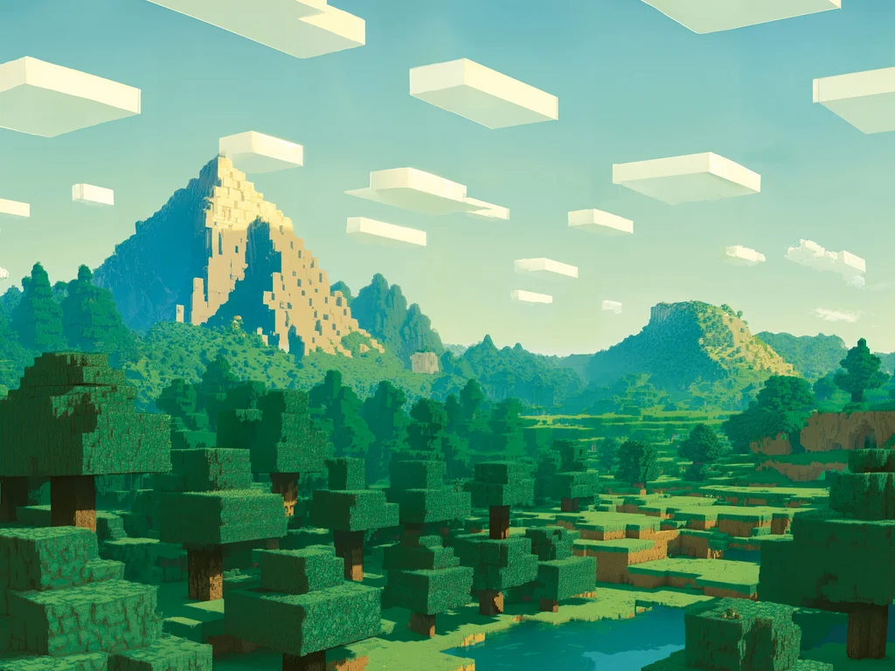

Play Minecraft
Building worlds, exploring systems, and turning rough ideas into places worth visiting.
About
I’m Jason, a Form 3 student in Hong Kong. Outside of school, I like building Minecraft worlds and finding out how computers work. I’m also interested in psychology, engineering, and cybersecurity.
I like building Minecraft worlds and learning how computers work. I’m especially curious about computer science, engineering, psychology, and cybersecurity.
Building worlds, exploring systems, and turning rough ideas into places worth visiting.
Exploring how software and machines are designed, and how ideas become working projects.
Learning how people think, decide, and connect — and how technology can support them.
Learning how systems can be protected and exploring security responsibly.
02 / Selected work
My space to collect experiments, milestones, and things I learn along the way.
TRANSFORMER RESEARCH / 2026
I’m studying how the Transformer uses self-attention to connect words across a sequence — an influential idea in computer science.

MINECRAFT / WORLDS
Explore six scenes from my Minecraft worlds.
MAC APP / COMPUTER VISION
My hands-free mouse app turns camera-based hand gestures into cursor movement and clicks, making computer control more natural and accessible.
OPEN SLOT / YOUR NEXT IDEA
Keep this space for future adventures.
03 / Right now
OPEN TO IDEAS
I’m experimenting with Bob, my OpenClaw agent, and exploring how it can use tools to help with practical tasks. I’m learning to set clear permissions and boundaries so new capabilities stay useful and safe.